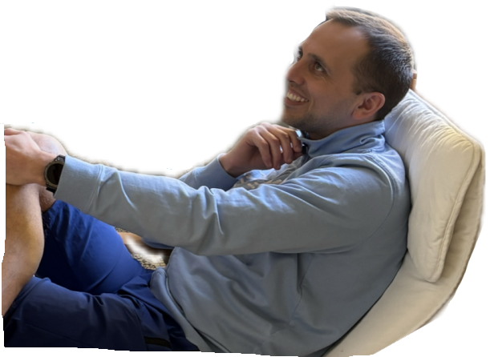
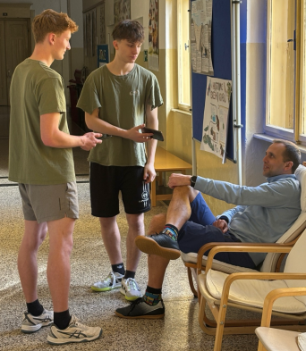

EXKLUZIVNÍ ROZHOVOR: Mgr. Robert Pečonka o své hráčské kariéře a cestě na Gymnázium Kladno

Bývalý fotbalový brankář SK Slaný a AFK Tuchlovice, dnes sportovně zapálený učitel tělocviku Mgr. Robert Pečonka, se rozpovídal s naší redakcí o své hráčské kariéře a následné cestě na kladenské gymnázium.
Ladislav Harbáček (LH): Co vás vedlo k fotbalu, pane profesore?
Robert Pečonka (RP): Asi rodiče, kolem šesti let se člověk moc nerozhoduje sám a z toho to
nějak vyplynulo. Pak už si to nějak nevybavuji, ani jsem nad tím nijak nepřemýšlel.
(LH): Jste brankářem, kdy a jak jste se k tomuto postu dostal?
(RP): Musím říct, že jsem začal vlastně už velmi brzy. Někdo se tam přesouvá v deseti letech, ale já jsem byl v bráně už
od začátku, nějak mě to táhlo do té branky.
(LH): Byla to vaše volba, nebo vás k tomu někdo dovedl?
(RP): Přesný důvod si nepamatuji, abych pravdu řekl.
(LH): Vaši rodiče byli sportovně založení, nebo vás spíš chtěli dostat z domu?
(RP): Asi to bylo spíše to druhé. Nebyli nějak extra sportovně založení. Táta tedy nějaké sporty dělal – házenou nebo
futsal, tehdy ještě sálová kopaná, ale ne na nějaké velké úrovni. Spíše to bylo, aby se mě zbavili.
(LH): Kdy a kde začala vaše kariéra?
(RP): Na Kablovce, jenom chvíli, jinak celou mládežnickou kariéru, od šesti do osmnácti let, jsem strávil na SK Kladno.
(LH): Působil jste také ve Slaném. Jak jste se dostal do tohoto týmu?
(RP): Prošel jsem více týmy, Slaný bylo až později.
(LH): Považujete angažmá ve Slaném za vrchol vaší kariéry, nebo jste zažil období i ve slavnějším klubu?
(RP): Ve slavnějším klubu asi ne, ale když jsem byl ve Slaném, tak tam hráli 1.A třídu, není to jako dneska, kdy hrají
divizi. Jinak jsem strávil nejdelší část kariéry v Tuchlovicích, také 1.A třída a povedlo se nám jeden rok postoupit do
krajského přeboru, což byla nejvyšší soutěž, ve které jsem chytal.
(LH): Považujete tento moment za vrchol vaší kariéry?
(RP): Ano.
(LH): Také se o vás ví, že se vám přihodilo nepříjemné zranění v oblasti pravého oka. Popsal byste nám, jak se to stalo?
(RP): Tuším, že to bylo zrovna v té postupové sezóně. Stalo se to v Cerhovicích u Berouna. Po rohovém kopu došlo k
osobnímu souboji s útočníkem a ten mě zasáhl loktem. Bylo z toho tržné zranění, naštěstí nic vážnějšího.
(LH): Omezilo vás následně toto zranění, byla nějaká dlouhá rekonvalescence?
(RP): Ani ne. Bylo to ke konci sezóny, možná tak 2 zápasy, nic velkého.
(LH): Kdy a kde skončila vaše fotbalová kariéra?
(RP): V roce 2019 se přerušila sezóna. Měl jsem přetržený vaz v koleni, to bylo přerušení, asi roční. Potom jsem
kariéru ještě jednou obnovil. Přemluvili mě kamarádi z Kablovky, takže ještě s nimi jsem kopával před rokem, rokem a
půl a asi v roce 2024 jsem skončil, protože jsem na stejném koleni podstoupil operaci menisku a řekl jsem si, že to stačí.
Kolektivní sporty nejsou moc dobré na kolena, když jsou s nimi
problémy. Teď už se věnuji trošku něčemu jinému.
(LH): Zahrát už si tedy nechodíte?
(RP): Nechodím, přeorientoval jsem se na běhání, badminton taky zvládám, i když to také není úplně optimální sport,
ale hlavně běhání, nebo kolo. Jsem rád, že mi to teďka drží.
(LH): Fotbal ale dále sledujete?
(RP): Sleduji, když vyjde čas.
(LH): Nyní vyučujete tělocvik na našem gymnáziu, jak jste se k tomu
dostal a proč jste si vybral právě naši školu?
(RP): Já jsem studoval tady na gymnáziu a potom jsem moc nevěděl, co
dál, kam pokračovat po vysoké škole, tak jsem se držel toho, co mě baví,
tedy pohyb, jenže moc možností nebylo ani potom, co jsem vystudoval
Fakultu tělovýchovy a sportu. Nejprve jsem si ani nemyslel, že bych chtěl
jednou učit, chtěl jsem jen dělat, co mě baví, mít nějaký titul, ale později
to z toho vyplynulo samo. Měli jsme praxe na tělesných výchovách na
základních školách, nebo potom tady na gymnáziu, když tady byl
ještě pan Ciprys, můj předchůdce. Učil jsem 4 roky na základní
škole, následně mě tehdy moje třídní profesorka na gymnáziu,
paní Hrazdírová, oslovila, že pan Ciprys jde do důchodu a že tady
bude volné místo. A proto jsem přesídlil sem.

Článek zpracovali: Ladislav Harbáček & Vojtěch Šmatlák
Březen 2026ZDROJE